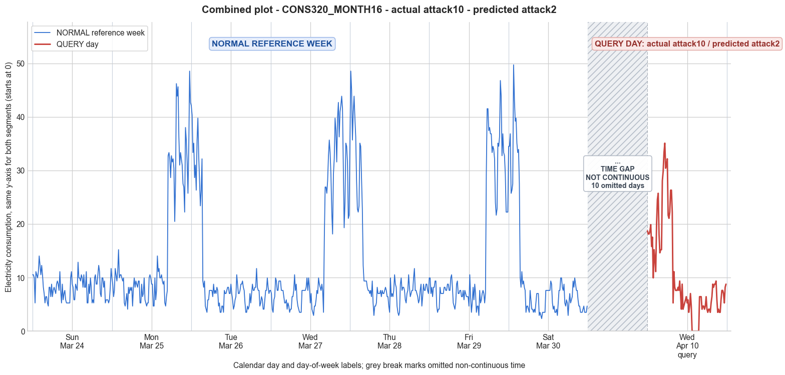

CONS320_MONTH16 · actual attack10 · predicted attack2
- Pair
- CONS320_MONTH16
- GT
- attack10
- Prediction
- attack2
- Binary GT
- attacked
- Binary Prediction
- attacked
- Source
- E010R1
- Parse
- stored
- Date
- 2013-04-10
- Weekday
- Wednesday
- Latency
- 2.04 min
- Tokens
- 9439

Final output
Classification: Manipulated Identified Attack: - Most Likely: Attack 2 - Confidence: High - Reasoning: The query day contains a contiguous block of nine zero readings (indices 55–63, equivalent to 13:45–16:00), which directly matches the definition of Attack 2—replacing consumption samples with zeros for a random duration. The reference week has no zero values; its daytime minima are consistently ≥2.34. Alternatives considered: Attack 4 (reduction over a period) typically scales or subtracts but does not usually force exact zeros over a full block; Attack IEEE would scatter zeros across the day rather than concentrate them in one contiguous segment. Both were ruled out because the observed pattern is a single, uninterrupted zero block rather than reduced non-zero values or sporadic zeros. Attack_Behavior_Explanation: - How consumption values are manipulated relative to the normal week: A continuous segment of 15‑minute readings was replaced by zero, creating an artificial “off” period. In the reference week, the same customer consistently shows low but strictly positive daytime consumption, never dropping to exactly zero. - Impact on magnitude and trend: The zero block reduces the daily mean (10.56 vs. week Day‑3 mean 14.60) and forces the daily minimum to 0.00, which is absent from the normal week. The trend is disrupted because the typical low‑level daytime load is interrupted by a flat zero segment, altering the shape of the load profile. - Possible technical causes: Full meter bypass, false data injection, or reverse current causing the meter to record no consumption during the attack interval.
Prompt
You are a domain expert in smart grid security and electricity theft analysis, with deep knowledge of non-technical loss (NTL) attack patterns in smart meters. You are given: 1. A plot of one week of original (normal) energy consumption for a smart meter, provided as context for the customer's typical consumption behavior. 2. A plot of one day of energy consumption for the same smart meter, which may or may not be manipulated. Below are common attack types, each defined by how consumption values are altered, their impact on magnitude and trend, and their possible technical causes. Attack 0: Generated by replacing all electricity consumption samples with zero values for the entire observation duration. Simulates a scenario where no energy usage is reported at all. May be caused by a total meter bypass or severe meter malfunction. Completely eliminates both the trend and magnitude of the consumption profile. Attack 1: Multiplies the actual energy consumption by a constant random value between (0,1). The lower the factor, the higher the severity. Can be triggered by meter bypass, magnetic interference, reverse current, and false data injection. The consumption trend remains the same but the magnitude is uniformly reduced. Attack 2: Generated by replacing consumption samples with zeros for a random duration. Also known as an on-off attack. Can be caused by full meter bypass, false data injection, and reverse current. Changes both the trend and amplitude. Attack 3: The actual consumption is multiplied by different random factors between 0 and 1, with a unique factor per sample. Similar to Attack 1 but the scaling factor varies per reading. Caused by meter bypass, magnetic interference, and reverse current. Changes both the trend and amplitude. Attack 4: Simulates energy theft over a randomly selected period within the observation window. All measurements in that period are reduced. Caused by meter bypass, magnetic interference, reverse current, and false data injection. Changes both the trend and amplitude. Attack 5: Each sample is replaced by a false value obtained by multiplying the average normal consumption by a random variable between 0 and 1, with a different variable per sample. Caused by false data injection. Produces a completely different pattern from the original consumption profile, changing both trend and magnitude. Attack 6: A random cut-off point is selected and all consumption values above it are replaced by that cut-off value. The attacker avoids exceeding a predefined maximum limit. Mainly caused by false data injection. Changes both the trend and amplitude. Attack 7: A random cut-off point is subtracted from each sample; if the result is negative, zero is reported. Similar to Attack 6 but replaces exceeding values with zero instead of the cut-off point. May be caused by false data injection or total meter bypass. Does not change the trend but reduces overall consumption. Attack 9: All samples are replaced by the average daily energy consumption, resulting in a flat constant profile. Easily detectable because constant consumption does not reflect normal customer behavior. Caused by false data injection. Eliminates all trends. Attack 10: Reverses the consumption pattern without reducing the total amount. Applicable when the electricity company uses time-varying pricing, allowing the attacker to shift high consumption to off-peak periods. Caused by false data injection. Changes the trend without decreasing total consumption. Attack 12: The attacker replaces their consumption pattern with that of a lower-consuming user. The legitimate user unknowingly pays the adversary's electricity bill. Caused by false data injection. Attack IEEE: For each 15-minute interval across the entire day, the consumer either reports the actual electricity consumption or substitutes it with zero. The result is a profile where some intervals reflect real consumption while others are zeroed out, creating an irregular pattern across the full day. May be caused by false data injection. Changes both the trend and amplitude. Given the two plots, determine: 1. Whether the day is attacked or original - compare the flagged day against the normal week and assess whether the consumption pattern is consistent with normal behavior or shows signs of manipulation. If the day is consistent with the customer's typical consumption behavior, classify it as original and provide no further analysis. If manipulation is detected, proceed to point 2. 2. Which attack type this most likely is - identify the single most probable attack and justify your choice based on how the flagged day deviates from the normal week. 3. The behavior of the identified attack - explain how the consumption values are manipulated, their impact on magnitude and trend, and the possible technical causes behind this type of attack. Output Format: Classification: - Original | Manipulated Identified Attack: (fill only if manipulated) - Most Likely: Attack X - Confidence: High | Medium | Low - Reasoning: Why it matches Attack X and why Attack Y and Attack Z were ruled out (list top 2 alternatives considered) Attack_Behavior_Explanation: (fill only if manipulated) - How consumption values are manipulated relative to the normal week - Impact on magnitude and trend - Possible technical causes
Reasoning content
We are given metadata: CONS_NO=320, MONTH_ID=16, WEEK_ID=2, DAY_ID=3, Season=Spring, Weekday=Wednesday, Date=2013-04-10. The reference week is probably from previous week? Actually DAY_ID=3 likely corresponds to Wednesday? But the per-day temporal features: Day 0: cal_month=3, dow=6 (Saturday), dom=0. Day 1: dow=0 (Monday), dom=1. Day 2: dow=1 (Tuesday), dom=2. Day 3: dow=2 (Wednesday), dom=3. Day 4: dow=3 (Thursday), dom=4. Day 5: dow=4 (Friday), dom=5. Day 6: dow=5 (Saturday), dom=6. Query day (DAY_ID=3): cal_month=4, dow=2 (Wednesday), dom=17. So the reference week is from Saturday (Day 0) to the following Saturday (Day 6), with dom 0 to 6. Query day is Wednesday with dom 17, so it's a different week (month 4 vs month 3). So the reference week is typical consumption for that customer, and query day is a flagged day. We need to determine if the query day is attacked or original. Compare its pattern to the reference week. The reference week shows a mix of patterns: Some days like Day 2, 3, 4, 5, 6 show a huge spike in the morning hours? Actually looking at Day 2: starts with high values 42.13, 40.37,... then drops to low around 8-9 am? Wait, there are 96 readings, so each is 15 min. Day 2: first readings: 42.13, 40.37, 33.35, 35.11, 28.67, 31.01, 26.33, 35.69, 39.79, 32.77, 28.09, 23.41, 26.33, 32.18, 9.36, 8.19,... So high values early, then a drop. That might be overnight? Actually, the day starts at midnight? Typically smart meter data: 15-min intervals, day 0 might start at midnight. So Day 2 (Tuesday): first readings are high around midnight? 42.13 at midnight? That seems like a spike. Then it drops to low after some hours, then later in the day it rises again? Check Day 2 end: ... 7.02, 7.61. So it seems like a double-peak pattern? Actually, many days show high values in the early morning (like 32-48 range) then drop to low single digits during the day, then rise again? Let's scan all days: Day 0: starts 10.53, 10.53, 9.95,... max 14.04, so relatively flat with small peaks. Day 1: starts 9.95, 8.78,... but later in the day, after some low values, there's a huge spike: 32.77, 33.35, 32.18,... up to 48.57. That spike occurs at indices 68-95? Let's count: Day 1 has 96 readings, starting from index 0. The spike starts around index 68? Reading: "5.27, 4.68, 6.44, 7.61, 32.77, 33.35,..." That's index 68 onward. That might correspond to evening/night? Actually, 96 readings, 24 hours. So index 0 = 00:00, index 4 = 01:00, etc. So spike in the evening? But Day 1 stats: min=4.10, max=48.57, std=12.17, mean=15.60. Day 2: starts with high values (42.13 at index 0), then drops after index 15 etc. So high values in the early morning? That could be overnight usage maybe heating? Then low during the day, then a smaller peak in evening? Day 3: starts 7.61, 7.02,... then later huge spike around index 68-95: "3.51, 17.55, 26.92, 26.92, 25.75, 28.09, 32.77, 35.69, 33.35, 29.26, 22.24, 18.14, 29.26, 32.18, 39.79, 37.45, 31.60, 39.79, 42.72, 36.28, 40.96, 42.13, 43.89, 41.54, 30.43, 19.31, 23.99, 35.11, 34.52, 31.60, 21.06, 21.65" So Day 3 has a massive spike at night. Day 4: starts 35.11, 48.57,... so high early, then drops, then at night? Day 5: starts 9.95, 9.95,... then spike around index 72: "7.02, 29.26, 41.54, 41.54,...". Day 6: starts 34.52, 34.52,... spike early, then drop, then later low. So the customer seems to have high consumption either late at night or early morning, possibly a business? But it's a smart meter for a resident? Anyway, the pattern shows variability, with some days having high consumption in the midnight to early morning, and lower during the day. Now query day: DAY_ID=3 (but it's a different week, month 4, dom 17). Its stats: min=0.00, max=35.11, std=8.82, mean=10.56. The reference week Day 3 (same day of week? but different week) had min=2.93, max=43.89, mean=14.60. So query day mean is lower, max lower, but min is 0.00, which is rare but could be zero? The reference week never had zero min; all days had min > 0 (min 2.34 across week). So zero is suspicious. Also query day's pattern: Look at the readings: 18.72, 18.14, 18.14, 18.72, 19.89, 15.80, 17.55, 9.95, 15.21, 13.46, 11.12, 19.89, 24.58, 25.75, 18.14, 14.63, 15.21, 15.21, 28.09, 29.84, 33.35, 35.11, 30.43, 31.01, 32.18, 21.65, 21.06, 22.24, 26.33, 26.33, 22.24, 5.27, 11.12, 8.19, 7.61, 7.61, 7.61, 8.19, 7.61, 9.36, 7.02, 4.10, 8.78, 4.10, 4.68, 5.27, 5.85, 6.44, 5.27, 5.85, 3.51, 4.68, 7.02, 4.68, 0.00, 0.00, 0.00, 0.00, 0.00, 0.00, 0.00, 0.00, 0.00, 6.44, 6.44, 6.44, 4.10, 4.68, 4.68, 4.10, 4.68, 6.44, 4.10, 3.51, 4.10, 4.10, 3.51, 5.27, 6.44, 8.78, 8.19, 8.78, 8.78, 9.36, 5.85, 3.51, 4.10, 3.51, 3.51, 5.85, 7.61, 7.61, 7.02, 5.27, 8.19, 8.78. We see a long stretch of zeros from index 55 to 62 (if indices 0-95, 55 to 62 = 8 zeros? Actually: "0.00, 0.00, 0.00, 0.00, 0.00, 0.00, 0.00, 0.00, 0.00, 6.44" So that's 9 zeros? Let's count: index 54 is 4.68, then 55: 0.00, 56: 0.00, 57: 0.00, 58: 0.00, 59: 0.00, 60: 0.00, 61: 0.00, 62: 0.00, 63: 0.00? Actually "0.00, 0.00, 0.00, 0.00, 0.00, 0.00, 0.00, 0.00, 0.00, 6.44" – that's nine zeros, followed by 6.44. So a block of 9 consecutive zero readings. That is a strong indication of manipulation. In reference week, we never see zeros, only low values around 2.93. So this is a red flag. Also, the beginning of the query day has a gradual increase from midnight? Starting at 18.72, then peaks at 35.11 around index 21? Actually indices: 0:18.72, 1:18.14, 2:18.14, 3:18.72, 4:19.89, 5:15.80, 6:17.55, 7:9.95, 8:15.21, 9:13.46, 10:11.12, 11:19.89, 12:24.58, 13:25.75, 14:18.14, 15:14.63, 16:15.21, 17:15.21, 18:28.09, 19:29.84, 20:33.35, 21:35.11, 22:30.43, 23:31.01, 24:32.18, 25:21.65, 26:21.06, 27:22.24, 28:26.33, 29:26.33, 30:22.24, 31:5.27, ... So from midnight to around 7:45 AM? Since 0:00 to 7:45 AM is 31 intervals (15 min each) = 7.75 hours. So high usage from midnight to early morning, then drops to 5.27 at index 31, then low single digits, then the zero block occurs later. Index 55 would be 13:45 (since 55*15min = 825 min = 13:45). So zeros from 13:45 to 15:30? Actually 9 zeros = 2.25 hours, from 13:45 to 16:00. That's an unusual time to have zero consumption for a normally active consumer, especially when the rest of the day shows consumption. So it's likely an on-off attack (Attack 2: replacing consumption samples with zeros for a random duration). Also Attack IEEE: For each 15-minute interval, consumer either reports actual or substitutes zero. But Attack IEEE is defined as "For each 15-minute interval across the entire day, the consumer either reports the actual electricity consumption or substitutes it with zero." That would result in sporadic zeros throughout the day. Here we have a continuous block of zeros, not scattered. So it's more like an on-off attack with a contiguous zero block. Also, the query day has a pattern that somewhat resembles reference week patterns: high early morning, then low, then some resumption. But the zeros are anomalous. There is also a jump from 5.27 to 11.12, 8.19... before the zero block. Before the zeros, indices 31-54: 5.27, 11.12, 8.19, 7.61, 7.61, 7.61, 8.19, 7.61, 9.36, 7.02, 4.10, 8.78, 4.10, 4.68, 5.27, 5.85, 6.44, 5.27, 5.85, 3.51, 4.68, 7.02, 4.68. That's a low consumption period, consistent with daytime. Then zeros, then 6.44, 6.44, 6.44, 4.10,... So the zero block interrupts the low daytime consumption. So it's a classic on-off attack: the meter reports zeros for a block of time, likely to simulate no usage and steal electricity during that period. Thus the day is manipulated. Attack type: Attack 2 (on-off attack) fits perfectly. Also consider Attack 0: all zeros, not the case. Attack 1: multiplicative scaling, but we see zeros, not just scaling. Attack 3: different factors per sample, but that would produce varying values, not zeros. Attack 4: Reduction over a random period, but it says "all measurements in that period are reduced", not necessarily to zero. But Attack 4 could be like Attack 1 or 3 but over a period? Actually Attack 4: "Simulates energy theft over a randomly selected period within the observation window. All measurements in that period are reduced." It doesn't specify how reduced; could be scaling or subtraction. But it says changes both trend and amplitude. Here we have exact zeros, which is a specific case of reduction. But Attack 2 explicitly says "replacing consumption samples with zeros for a random duration", which exactly matches. So Attack 2 is most precise. Could it be Attack 7? "A random cut-off point is subtracted from each sample; if the result is negative, zero is reported." That would produce many zeros if the cut-off is high, but here we see zeros only in a block, and other values are not obviously from subtraction of a constant because earlier values are high and later values are positive. If we had a cut-off, we'd expect many samples to be reduced to zero or low values, but the pattern before and after the zero block seems normal. So unlikely. Attack IEEE: random zeros per interval would give scattered zeros, not a contiguous block. So ruled out. Thus Attack 2 is the most likely. Confidence: High. Because we see a contiguous block of 9 zero readings, which is a hallmark of on-off attack. The rest of the day seems normal compared to reference week's pattern (high early morning, low daytime). So the attack is localized in time. Now, we need to output: Classification: Manipulated Identified Attack: - Most Likely: Attack 2 - Confidence: High - Reasoning: Why it matches Attack 2 and why Attack Y and Attack Z were ruled out (list top 2 alternatives considered) Alternatives considered: Attack 4 and Attack IEEE. Attack 4 is a reduction over a period but typically does not zero out values completely; Attack 2 specifically zeroes. Attack IEEE would cause scattered zeros, not a contiguous block. So Attack 2 is best. Attack_Behavior_Explanation: - How consumption values are manipulated relative to the normal week: The attacker replaced a continuous block of readings (indices 55-63) with zeros, simulating no consumption for about 2.25 hours during the afternoon, whereas the reference week shows no zero values and consistent low but non-zero daytime usage. - Impact on magnitude and trend: The magnitude is reduced due to the zero block, lowering the daily mean and min. The trend is disrupted because the normal low daytime usage pattern is interrupted by a flat zero segment. - Possible technical causes: Full meter bypass, false data injection, or reverse current that allows the meter to report zero during the attack period. Final output.